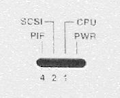
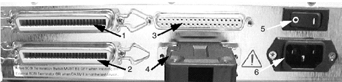
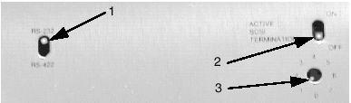
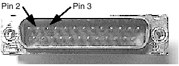
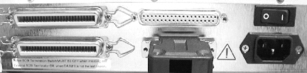

Proprietary to General Electric
Direction 5114043-800, Rev# 9
LightSpeed 3.X Service Methods (Advanced)
Proprietary to General Electric |
Illustration 1: LEDs on front of Digital DASM II

DASM Status Indicators, left to right (see Illustration 1):
PIF - Personal interface data transfer
SCSI - Host is accessing the DASM
CPU - DASM CPU is active
PWR - DASM is powered
Illustration 2: Digital DASM II, rear view, showing connections and power switch

SCSI Input - 50-Pin Centronics
SCSI Loop-through OR Active slick type terminator required
RS422 SERIAL CAMERA CONTROL PORT with loop back
25-PIN D-TYPE SOCKET, 1200 BAUD, 1 START BIT, 1 STOP BIT, SERIAL HOST CONTROL TO CAMERA (OR KIEB OR OTHER SERIAL CONVERTER, IF PRESENT, ON SOME CAMERA INSTALLATIONS)
Image Connector
DASM AC Power Switch
O = Off
| = ON
AC Input Modular Plug (filtered)
Illustration 3: Digital DASM II, bottom view, showing communications & SCSI settings

RS-232/RS-422 - Shown set to “RS-232”
Termination - Shown in the “OFF” position
SCSI ID -Shown set to “1”
For the loop-back test, jumper Pin 2 (TX) to Pin 3 (RX) of the DASM/LCAM RS232 25-pin D-type pin connector (located at the end of the LCAM Y-cable assembly). See Illustration 4 for pin identification.
Illustration 4: DASM/LCAM Y-cable 25-pin MALE connector

Illustration 5: Rear of Digital DASM II, showing loop-back connector (bottom, center)

| NOTE: | Before You Start: Make sure that the film queue is empty or fully paused, or the commands shown below will fail. |
CONNECT loopback connector (2214163-2) as shown in Illustration 5.
ENTER the ‘su’ command to become ‘root’:
{ctuser@rhap1}su
password:
CLEAR the DASM camera response buffer:
{ctuser@rhap1}clrsp /dev/dasm1
DISPLAY the DASM camera response buffer:
{ctuser@rhap1} rsp /dev/dasm1
Byte 0: 02 IDLE
Byte 128: 00
index: 0000 hex buffer size: 00f0 hex
CONFIRM that status line 110 is CLEARED:
110: 00 00 00 00 00 00 00 00 00 00 00 00 00 00 00 00 ...... (DASM Buffer Cleared)
ISSUE a single RQS command out serial port:
{ctuser@rhap1} rqs /dev/dasm1
DISPLAY the DASM camera response buffer:
{ctuser@rhap1} rsp /dev/dasm1
Byte 0: 06 IDLE ERROR
Byte 128: b0
index: 000f hex buffer size: 00f0 hex
INSPECT for TWO RQS entries at LINE 110
If only ONE RQS, the loopback FAILED
If TWO RQS entries, the loopback PASSED
110:69 52 51 53 2d 52 51 53 0d 26 0a 0b b0 0c 06 00 iRQS-iRQS.&...... (RQS looped back OK-DASM serial port works)
RESET the LCAM between each loopback test using both commands shown (repeat commands until ‘showdasm’ responds normally). If possible, just cycle DASM/LCAM power between each of the loopback test runs to re-initialize its firmware. The LCAM gets very confused by each loopback.
REPEAT steps 3 through 9 to verify the test results.
If the test FAILS, the DASM serial port is BAD. Make sure the test jumpers are installed correctly.
If the test PASSES, the DASM serial port is working and is not the cause of a serial communication problem. Check external serial cables, any serial converters, camera serial port setup parameters. You can move the loopback jumpers to the end of the 25 pin external serial cable and rerun the test to verify the cable/connectors (especially on new installations).
| NOTE: | When You’re Done: Reset the DASM/LCAM per step 9. |